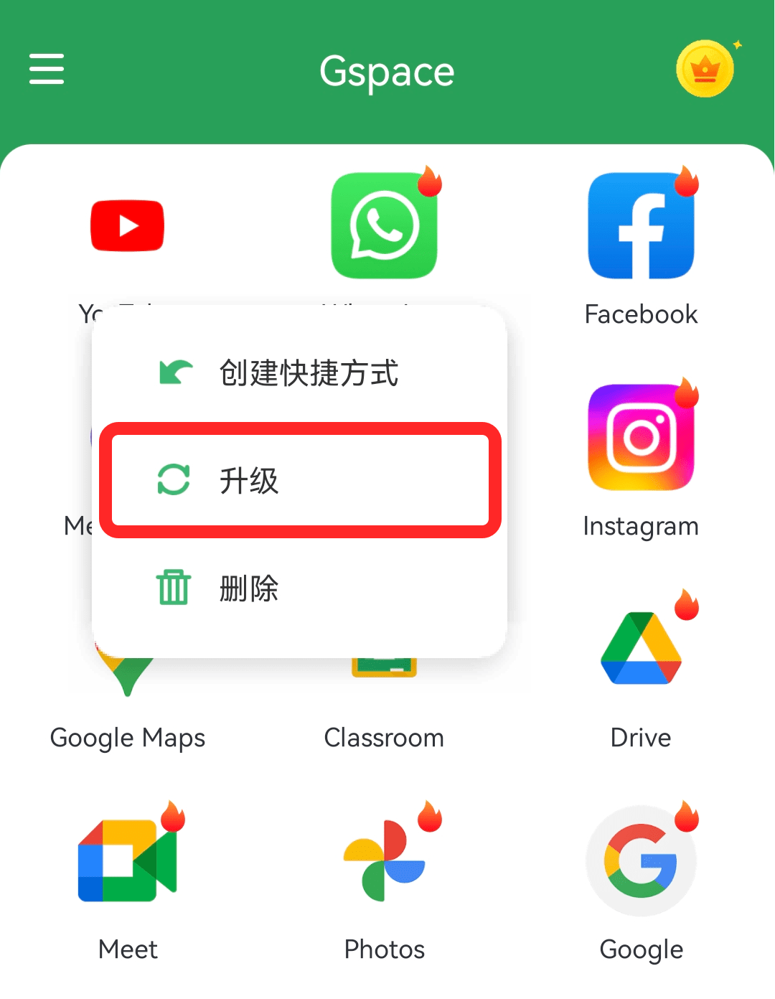

Gspace 快问快答——安卓手机跑谷歌服务到底靠不靠谱
整理一篇关于 Gspace 的快问快答：它是什么、谁需要、怎么装、常见坑、和手机克隆有什么不同，七个问题覆盖日常使用的大部分疑问。
整理一篇关于 Gspace 的快问快答——安卓尤其是鸿蒙用户想在手机上跑谷歌应用，十有八九搜过这个名字。把社区里反复被问的几个问题一次性说清。
Gspace 到底是什么？
它的官网上把这个定位说得很清楚——Gspace 是一个安卓应用容器，在你手机上隔出一块独立空间，里面跑完整的谷歌服务框架和 Play 商店。容器和主系统完全隔离，主系统里装的应用、照片、文件都碰不到，反过来也一样。
它不是模拟器、不需要 root、也不用刷机。装好之后就多了一个 Gspace 图标，点开进去就是另一个安卓桌面——有 Play 商店、有 Gmail、有 YouTube，跟一台原生安卓机没什么区别。
谁需要 Gspace？
两类人最刚需。一类是国内安卓和鸿蒙手机用户——出厂不带 GMS，装不了 Play 商店里的应用，想用水印相机、海外版社交工具、Google 全家桶都得靠它。另一类是想双开应用的人——主系统装一个微信，Gspace 里再装一个，两个账号同时在线，互不干扰，而且比大多数国产双开工具干净，不偷数据。
反过来，如果你已经在用 Pixel 或其他原生安卓机、GMS 全套自带，那 Gspace 对你来说就是多此一举。
怎么装？华为用户怎么搜不到？
安装路径分两条线，看你手机品牌。
非华为的安卓手机：安装包从官方下载拿，装就行。装之前进系统设置把"允许未知来源"打开一次，装完可以再关掉。首次启动会自动下载 GMS 组件，等它走完再用。
华为 / 荣耀用户：应用市场搜不到是因为默认地区在中国大陆。进应用市场的"我的 → 设置 → 国家/地区"，切到英国或欧洲国家，应用市场会自动刷新，再搜 Gspace 就能找到了，直接一键安装，零权限配置。
装完打不开、闪退一次是正常现象——组件刚下载完有个初始化重载，直接重新打开就行。反复闪退才需要清后台或卸载重装。
容器内的 Play 商店打不开、点安装没反应？
这是两个独立的问题。
Play 商店白屏或打不开：90% 的情况是 GMS 组件没下完整。Gspace 主界面的应用网格如果显示不全（Play 商店图标在但预装应用缺），那就是组件没走完，卸载重装让它重新下载一遍就好。剩下 10% 是网络不通——容器内的网络和主系统走同一条通道，先确认主系统能访问谷歌服务再说。
点安装按钮完全没反应：这是鸿蒙用户最容易踩的坑——没开"在应用内安装其他应用"权限。进设置 → 应用 → 权限管理 → 找到 Gspace → 把那个开关打开。没开的话，Play 商店点安装会静默失败，不报错不弹窗，看起来像应用 bug，其实就是权限没给。

网络经常超时、连不上 Google 服务？
先搞清楚一件事——Gspace文档里也专门澄清过：Gspace 不做网络中转也不做加速。容器内应用的网络请求和主系统用的是同一个物理接口，所以容器内网络不通 = 主系统网络不通。这个认知误区在社区里特别常见——很多人把容器的网络问题归咎于 Gspace "没做好网络优化"，其实它根本不管网络层的事。
排查顺序很简单：先在主系统浏览器里打开 google.com，能不能打开？主系统也打不开的话，问题在你自己的网络或代理，跟 Gspace 没关系。主系统能打开但容器内打不开，那清理一下 Gspace 缓存（设置 → 应用 → Gspace → 存储 → 清除缓存），不行就重启手机，再不行卸载重装。
用代理或 VPN 的话，确认是全局模式——容器内流量需要和主系统走同样的代理通道，部分安卓版本上容器不会自动继承主系统的代理设置，只能换全局。
和手机自带的"应用克隆"有什么区别？
克隆是把主系统里的应用复制一份出来，共享同一个系统环境。Gspace 是完整的独立容器——里面有自己的 GMS、自己的文件系统、自己的应用数据。三个关键差异：
第一，克隆版的应用如果依赖 GMS（比如海外版 TikTok），克隆出来还是用不了，因为底层没谷歌框架。Gspace 里的应用有完整的 GMS 支持，Play 商店里能装的基本都能跑。
第二，克隆和主系统还是有数据互通的可能（比如共享文件存储权限），Gspace 和主系统是物理隔离的——容器里存的东西主系统应用看不到，反过来也一样。
第三，克隆功能是国产 ROM 定制的，不同品牌体验差异大。Gspace 是第三方独立应用，所有安卓手机用起来都是一套逻辑。
容器内的应用怎么卸载？卸载 Gspace 主程序会怎样？
卸载容器内某一款应用：长按图标 → 菜单里选"卸载"。只清掉容器里这一个应用的数据，主系统同名应用完全不受影响。Gspace 没做批量卸载，多了只能挨个长按。
卸载 Gspace 主程序：这就厉害了——容器内所有应用、账号、下载的文件全部清除。但主系统的应用、照片、文件完全不受影响。想换一套应用配置直接卸载重装是最快的方式，重装完组件得重新下载一遍，谷歌账号也得重新登录。
所以卸载 Gspace 之前先在脑子里过一遍：容器里有没有没备份的数据？确定没了再动手。
值不值得长期用？
最后一句：如果你是鸿蒙或国内安卓用户、确实有谷歌服务需求，Gspace 目前是最省心的方案——不用 root、不用刷机、装即用、隔离干净。没有谷歌服务刚需的话，装上也是浪费存储空间。作者把这套整理好的资料同时放在了三个开源仓库——GitHub、Gitee、GitCode——怕某个仓库访问不了随时可以换一个。